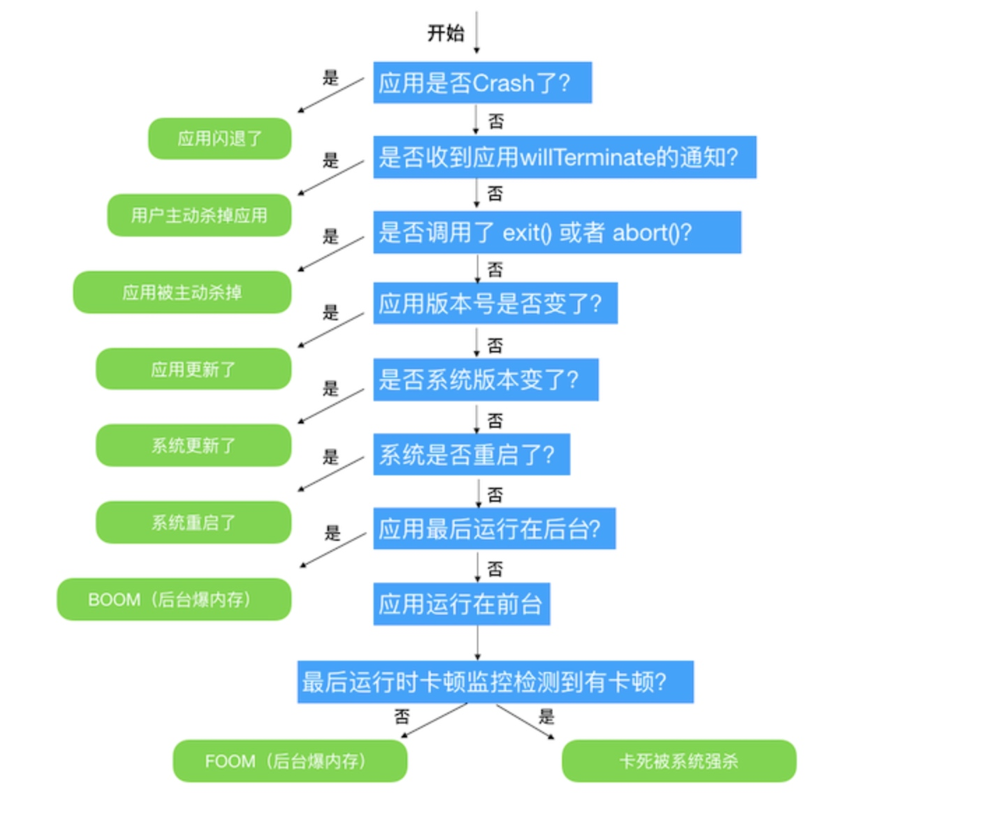

学习到的知识点
1.使用协议和继承进行规范开发
在项目中定义了plugin的基类MatrixPlugin继承自协议MatrixPluginProtocol，而接下来的组件开发，只需要继承自MatrixPlugin，然后实现协议中的方法即可
而当回调时，也不需要知道具体是哪个plugin，只需指定其实一个继承了协议的插件即可:
- (void)onInit:(id<MatrixPluginProtocol>)plugin,就可以使用其在协议中指定的方法
2.利用运行时实现NSCoding协议
利用运行时方法获取对象类以及父类的所有属性变量属性变量，执行encodeObject和decodeObjectForKey方法
3. 对于app中常用文件路径可以专门写个工具类，为避免每次都访问使用单例
+ (NSString *)matrixCacheRootPath
{
static NSString *s_rootPath;
static dispatch_once_t onceToken;
dispatch_once(&onceToken, ^{
NSArray *paths = NSSearchPathForDirectoriesInDomains(NSCachesDirectory, NSUserDomainMask, YES);
s_rootPath = [paths[0] stringByAppendingString:@"/Matrix"];
if ([[NSFileManager defaultManager] fileExistsAtPath:s_rootPath] == NO) {
[[NSFileManager defaultManager] createDirectoryAtPath:s_rootPath withIntermediateDirectories:YES attributes:nil error:nil];
}
});
return s_rootPath;
}
4.判断app是否处于调试环境下
+ (BOOL)isBeingDebugged
{
// Returns true if the current process is being debugged (either
// running under the debugger or has a debugger attached post facto).
int junk;
int mib[4];
struct kinfo_proc info;
size_t size;
// Initialize the flags so that, if sysctl fails for some bizarre
// reason, we get a predictable result.
info.kp_proc.p_flag = 0;
// Initialize mib, which tells sysctl the info we want, in this case
// we're looking for information about a specific process ID.
mib[0] = CTL_KERN;
mib[1] = KERN_PROC;
mib[2] = KERN_PROC_PID;
mib[3] = getpid();
// Call sysctl.
/**
*int sysctl(int *name, u_int namelen, void *old, size_t *oldlen, void *newp, size_t newlen);
*name参数是一个用以指定查询的信息数组；
*namelen用以指定name数组的元素个数；
*old是用以函数返回的缓冲区；
*oldlen用以指定oldp缓冲区长度；
*newp和newlen在设置时使用；
*当进程被调试器依附时，kinfo_proc结构下有一个kp_proc结构域，
kp_proc的p_flag的被调试标识将被设置，即会进行类似如下的设置：
kinfo_proc.kp_proc.p_flag&P_TRACED
其中P_TRACED的定义如下：
#define P_TRACED 0x00000800
*/
size = sizeof(info);
junk = sysctl(mib, sizeof(mib) / sizeof(*mib), &info, &size, NULL, 0);
assert(junk == 0);
// We're being debugged if the P_TRACED flag is set.
return ((info.kp_proc.p_flag & P_TRACED) != 0);
}
以及一些获取app基本信息的方法
MatrixDeviceInfo
5. atexit(func)在app正常退出时调用函数
atexit函数是一个特殊的函数，它在正常退出程序时调用的函数
atexit设置的函数会在exit过程中被调用，exit调用终止处理函数的顺序和atexit登记的顺序相反
进程终止的方式有8种:
- 从main函数返回
- 调⽤用exit函数
- 调⽤用_exit或_Exit；
- 最后⼀一个线程从启动例程返回；
- 最后⼀一个线程调⽤用pthread_exit
- 调⽤用abort函数；
- 接到一个信号并终⽌；
- 最后⼀一个线程对取消请求做出响应
其中前5种为正常终止，而后3种为异常终止
_exit和_Exit立即进入内核，而exit会进行一些清理工作
exit函数运行时首先会执行由atexit()函数登记的函数，然后会做一些自身的清理工作，同时刷新所有输出流、关闭所有打开的流并且关闭通过标准I/O函数tmpfile()创建的临时文件。
6. 使用dispatch_block_cancel()来取消执行某些未来执行的block
7. MatrixAppRebootAnalyzer中对App启动和关闭状态的监控
Matrix中对应用被杀原因检测

8.获取CPU
WCCPUHandler文件中对于CPU usage的计算
9.获取线程信息
WCGetMainThreadUtil文件中使用基于KSCrash获取堆栈